Thank you for playing "What Crop."
By playing, you are contributing to the scientific understanding of farmer decisionmaking in the United States.
You will be paid for participating based on your score on this game.
Please play without stopping for . This may take about 12 minutes to complete.
You can see your score, and how much money you've earned, on the right-hand side.
You will earn bonuses when you reach and levels of points!
 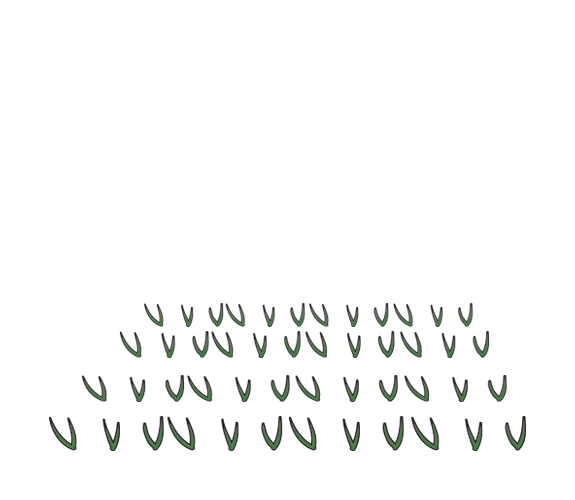
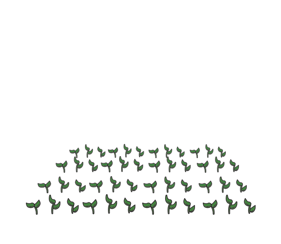
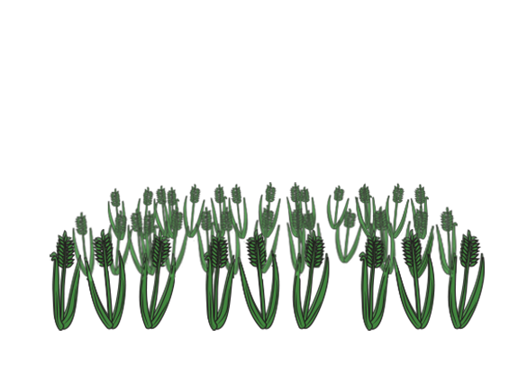
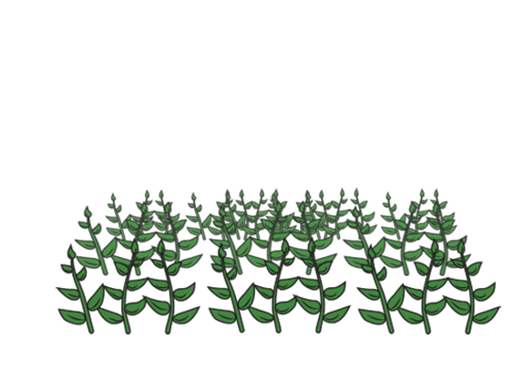
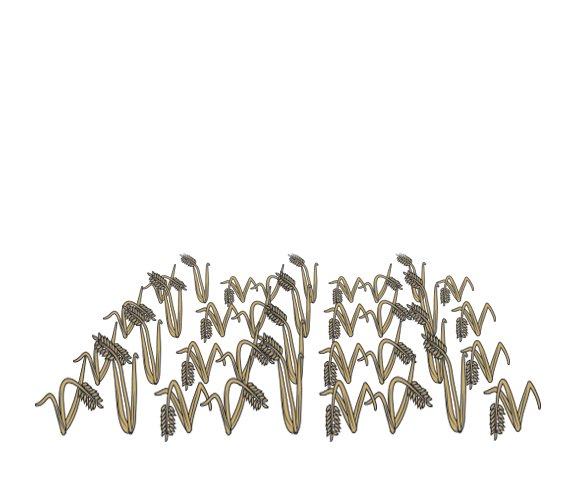
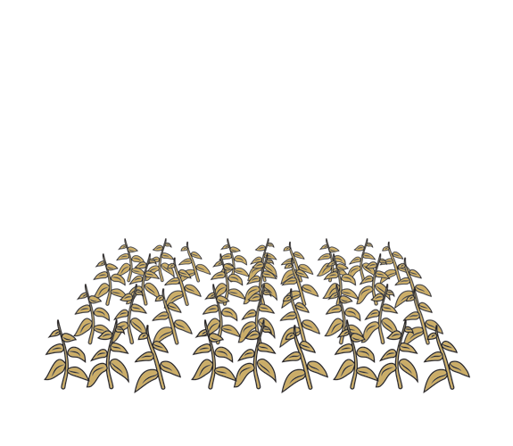
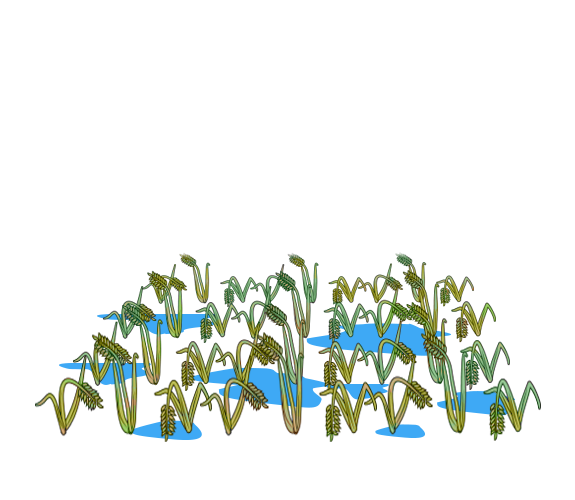
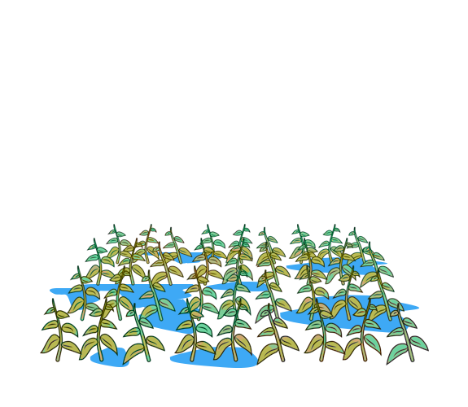
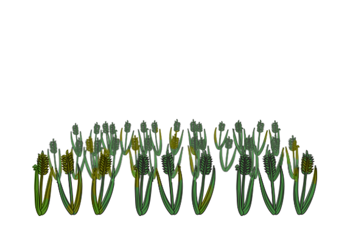
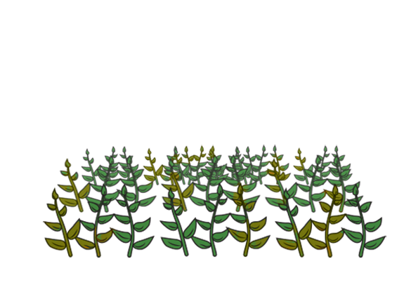
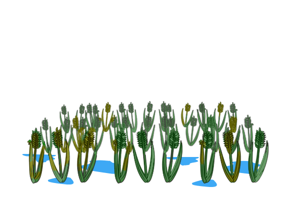
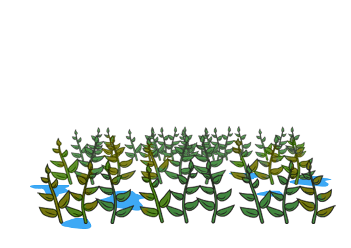
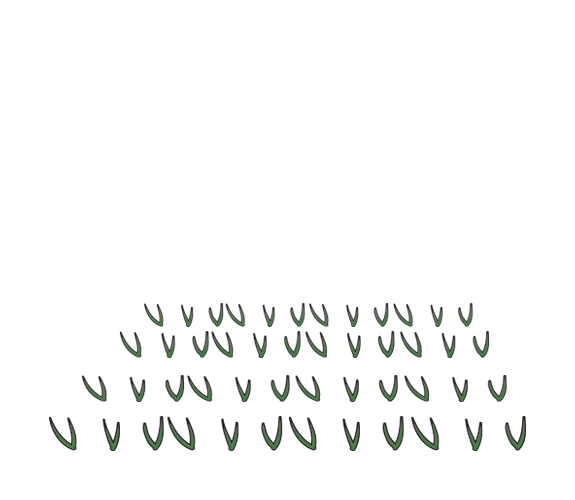
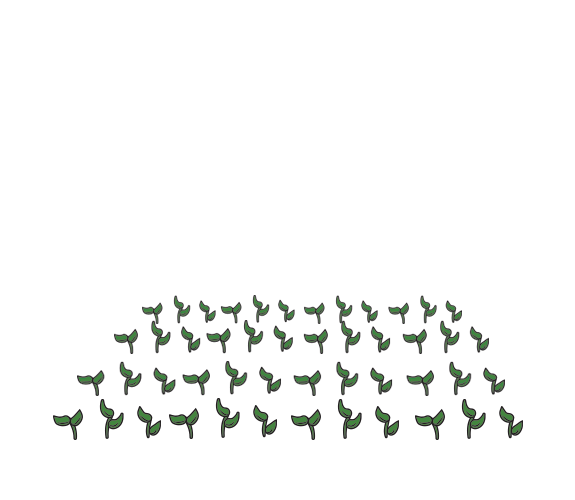
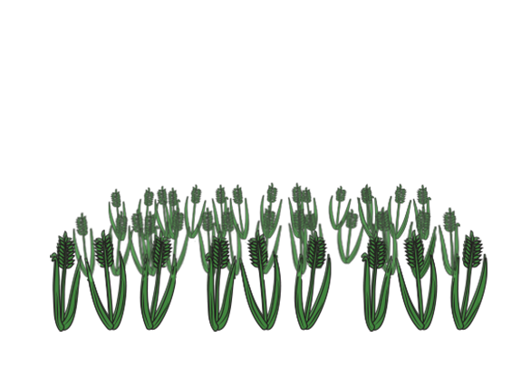
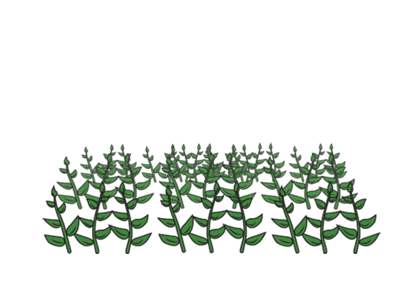
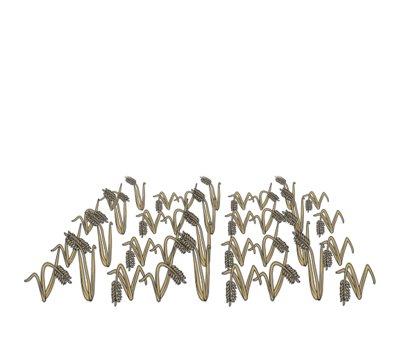
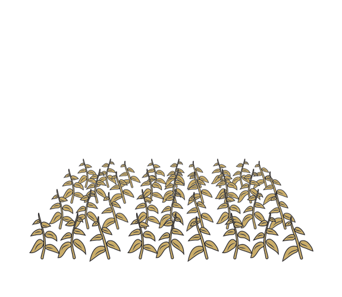
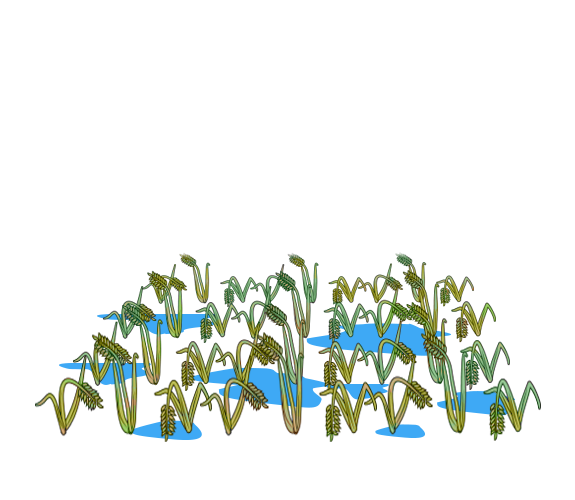
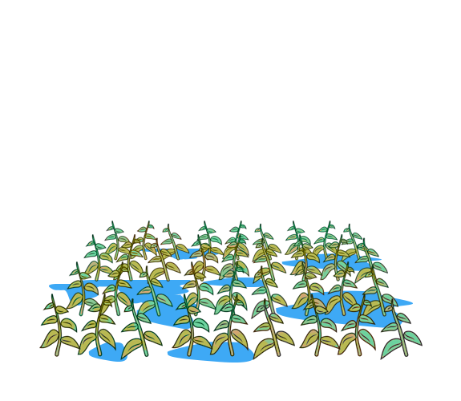
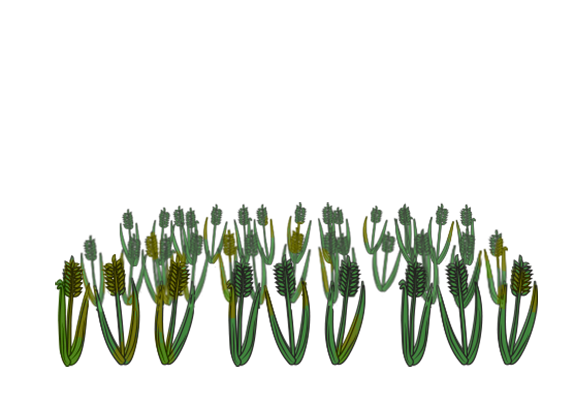
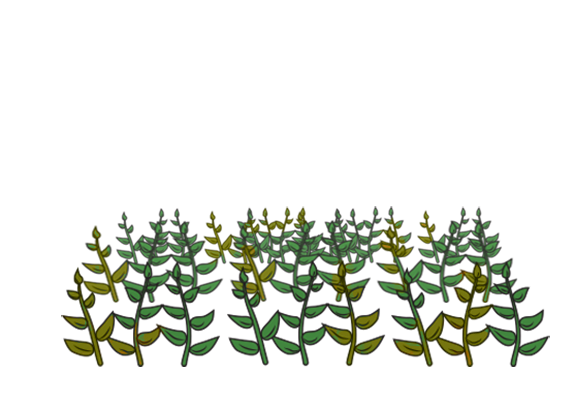
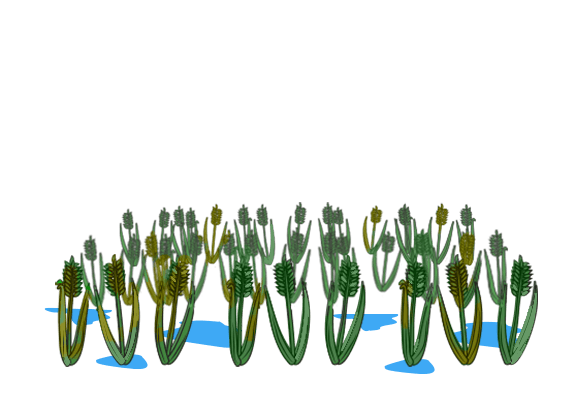
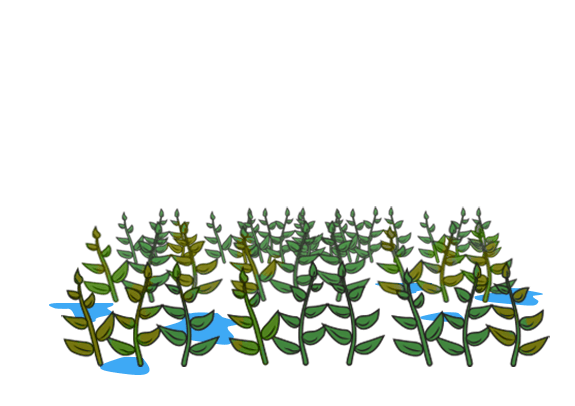